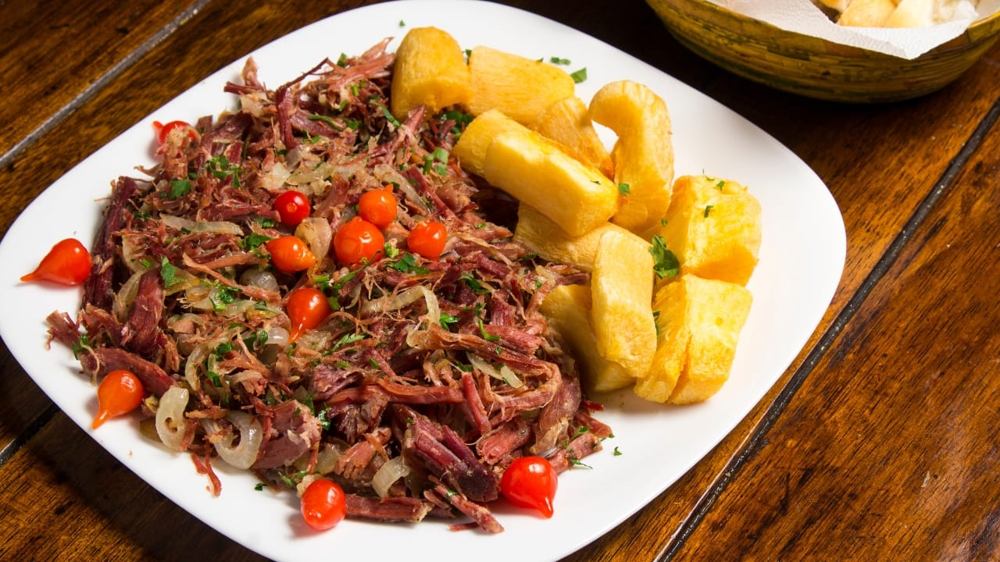
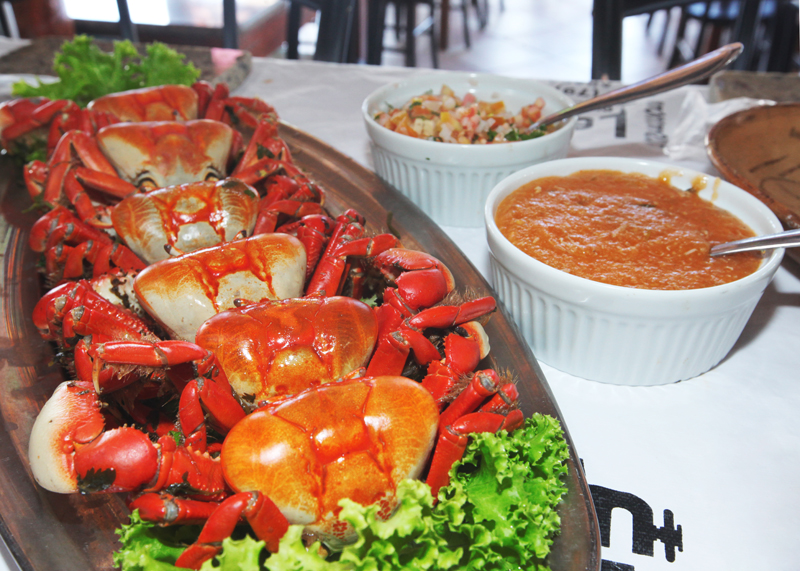
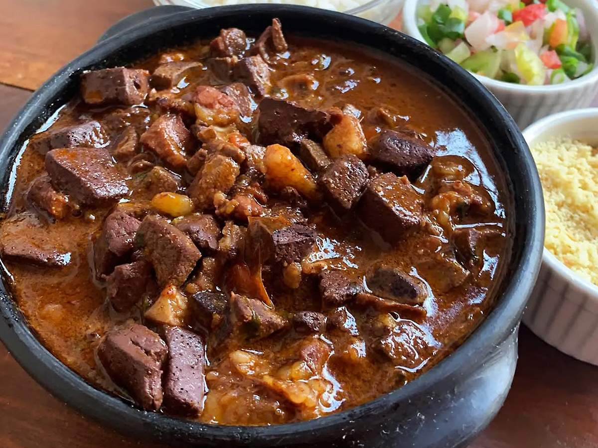
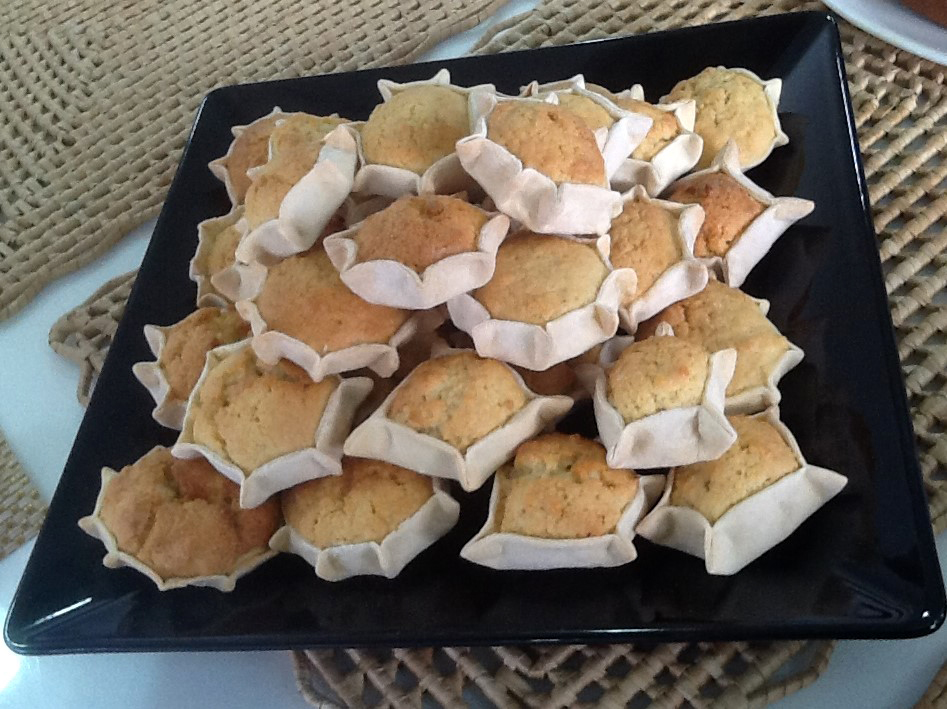

O modo de preparo da Carne de Sol com Macaxeira na Manteiga de Garrafa é relativamente simples, mas requer atenção aos detalhes para garantir o sabor autêntico.
Preparo da Carne de Sol (Dessalga)
A carne de sol precisa ter o excesso de sal retirado antes do cozimento:
Corte a carne em pedaços médios (cerca de 5 cm).
Deixe de molho em uma tigela com bastante água fria na geladeira por, no mínimo, 12 horas. Troque a água pelo menos 3 vezes durante esse período.
Escorra a água do molho e transfira a carne para uma panela de pressão. Cubra com água limpa.
Cozinhe na pressão por cerca de 20 a 30 minutos após o início da pressão. O tempo pode variar dependendo do corte e da espessura. A carne deve ficar macia, mas ainda firme.
Escorra a carne cozida e reserve. Se preferir, você pode desfiá-la ou mantê-la em pedaços.
2. Preparo da Macaxeira
Descasque a macaxeira, lave e corte em pedaços médios. Retire o fio central (se houver).
Cozinhe a macaxeira em uma panela com água (pode ser na panela de pressão por cerca de 10 a 15 minutos) até ficar bem macia. Adicione uma pitada de sal à água se a macaxeira for insossa.
Escorra a macaxeira e reserve.
3. Montagem e Finalização
Esta é a etapa que dá o sabor característico do prato:
Em uma frigideira grande ou panela funda, aqueça 2 colheres de sopa de manteiga de garrafa em fogo médio.
Adicione o alho picado e refogue até dourar levemente.
Junte a carne de sol (em pedaços ou desfiada) e frite até dourar bem por todos os lados. Tempere com pimenta do reino a gosto.
Acrescente as rodelas de cebola e refogue até que fiquem transparentes e ligeiramente caramelizadas.
Em outra frigideira, ou na mesma se tiver espaço, aqueça a manteiga de garrafa restante. Adicione os pedaços de macaxeira cozida e dê uma "puxada" (frite levemente) para que absorvam o sabor da manteiga.
Misture a macaxeira com a carne e a cebola, ou sirva a macaxeira em uma travessa e a carne por cima.
Finalize com cheiro-verde picado por cima (opcional) e sirva imediatamente.
Dicas do Chef
Manteiga de Garrafa é Essencial: O sabor autêntico depende do uso da manteiga de garrafa, que tem um sabor mais intenso e característico que a manteiga comum
Ponto da Carne: A carne deve estar macia do cozimento, mas firme o suficiente para ser frita e dourar sem desmanchar (a menos que prefira desfiada).
Acompanhamentos: Sirva com arroz branco, feijão verde ou um vinagrete para uma refeição completa e tipicamente nordestina.
O modo de preparo do caranguejo em Aracaju geralmente se refere ao método de cozimento simples, com temperos básicos, servido inteiro para ser consumido com utensílios específicos.
Preparação dos Caranguejos
Certifique-se de que os caranguejos já foram cozidos e estão limpos antes de começar a receita.
2. Preparo dos Temperos
Em uma panela grande, adicione um pouco de água e os temperos: sal, cebola, alho, tomates, pimentão, cheiro-verde e pimenta do reino.
Deixe os temperos cozinharem por alguns minutos para que liberem o sabor.
3. Aquecer os Caranguejos
Adicione os caranguejos cozidos à panela com os temperos.
Mexa delicadamente para que os caranguejos fiquem envoltos nos temperos.
Cozinhe por cerca de 5 a 10 minutos, apenas para aquecer os caranguejos e permitir que absorvam o sabor dos temperos.
4. Servindo
Retire os caranguejos da panela e sirva imediatamente em uma travessa grande.
Utensílios: Na mesa, cada pessoa deve ter um martelinho de madeira e uma faquinha para quebrar as patas e a carapaça e extrair a carne.
Acompanhamentos: Sirva com vinagrete, farinha de mandioca e, se desejar, fatias de limão para espremer sobre a carne.
Dicas Importantes
Para uma versão com molho mais cremoso (uma "caranguejada"), você pode cozinhar os caranguejos em menos água e adicionar leite de coco no final do cozimento.
Água: A base do cozimento.
Temperos Verdes (Cheiro-Verde): Coentro e cebolinha são essenciais e usados em grande quantidade.
Aromáticos: Alho, cebola, tomate e pimentão, geralmente cortados em pedaços grandes.
Sal: Para temperar a água e a carne do caranguejo.
Outros Opcionais: Pimenta-do-reino, um pouco de colorau para dar cor, ou limão.
O Processo de Preparo
Limpeza: Os caranguejos (vivos) são escovados e limpos minuciosamente para remover impurezas.
Cozimento do Caldo: Em uma panela bem grande, a água é levada ao fogo com todos os temperos para ferver e apurar o sabor.
Adição dos Caranguejos: Os caranguejos limpos são colocados na panela.
Tempo de Cozimento: Eles cozinham por um tempo determinado até que a cor da carapaça mude completamente (de verde-azulado para vermelho/laranja intenso) e estejam cozidos por dentro.
Limpeza e Pré-Cozimento
Lave muito bem todos os miúdos em água corrente.
Deixe de molho em uma mistura de água com suco de limão ou vinagre por pelo menos 1 hora para ajudar a limpar e tirar qualquer odor forte.
Escorra a água e enxágue novamente.
Em uma panela, ferva os miúdos em água limpa por cerca de 5 a 10 minutos. Escorra novamente a água do pré-cozimento e reserve os miúdos. Isso ajuda a garantir a limpeza e maciez.
2. Refogado e Cozimento
Em uma panela de pressão ou panela funda, aqueça o óleo ou a banha de porco em fogo médio.
Adicione o alho e a cebola picada, refogando até dourarem.
Acrescente o tomate e o pimentão e refogue até murcharem
Junte os miúdos pré-cozidos e misture bem.
Tempere com sal, pimenta-do-reino, cominho e colorau, refogando por mais alguns minutos para que os sabores se incorporem.
Adicione água quente suficiente para cobrir todos os ingredientes.
Cozinhe em fogo médio. Se usar panela de pressão, cozinhe por cerca de 20 a 30 minutos após pegar pressão. Em panela normal, o cozimento será mais lento, até que os miúdos estejam macios e o molho tenha engrossado.
3. Adição do Sangue e Finalização (Opcional)
Se optar por usar o sangue coalhado, adicione-o à panela cerca de 10 minutos antes de finalizar o cozimento, pois ele só precisa aquecer e incorporar ao molho.
Quando o sarapatel estiver macio e o molho encorpado, desligue o fogo.
Adicione o cheiro-verde picado (coentro e cebolinha) e misture.
Sirva o sarapatel quente, acompanhado de arroz branco, farinha de mandioca e um molho de pimenta caseiro.
O modo de preparo da queijadinha é bastante simples, rápido e não exige batedeira ou liquidificador, apenas uma tigela e um batedor manual (fouet) ou colher.
Preparar a Massa:
Misture a manteiga amolecida com o açúcar e as gemas até formar um creme homogêneo.
Adicione as raspas de limão ou a baunilha
Peneire os ingredientes secos (farinha, amido de milho, fermento) e incorpore-os delicadamente à mistura com a ponta dos dedos, sem sovar muito, até a massa ficar compacta e úmida.
Deixe a massa descansar na geladeira por cerca de 20 a 30 minutos.
Assar os Biscoitos:
Abra a massa com um rolo entre duas folhas de plástico ou papel manteiga para evitar que grude na superfície.
Corte discos de massa com um cortador (ou a borda de um copo).
Transfira os discos para uma forma e asse em forno pré-aquecido a uma temperatura média-baixa (cerca de 160°C a 180°C) por aproximadamente 10 a 15 minutos. Os biscoitos devem ficar cozidos, mas não dourados.
Deixe os biscoitos esfriarem completamente em uma grade.
Montagem e Cobertura:
Pegue um biscoito frio, adicione uma quantidade generosa de doce de leite no centro (um saco de confeitar ajuda a ser mais preciso)
Coloque outro biscoito por cima e pressione suavemente para que o doce de leite se espalhe até a borda e os biscoitos fiquem bem unidos. Retire o excesso de doce de leite das bordas com uma faca ou com o dedo.
Para finalizar, os alfajores podem ser passados nas laterais com coco ralado ou banhados em chocolate derretido (pode ser chocolate fracionado para facilitar e não precisar de têmpera).
Deixe a cobertura de chocolate secar em uma superfície forrada com papel manteiga.
O modo de preparo da cocada morena depende se você prefere uma versão cremosa (usando açúcar caramelizado e, opcionalmente, leite condensado) ou uma versão de corte mais firme (usando rapadura ou açúcar mascavo).
Caramelize o açúcar: Em uma panela de fundo grosso, coloque o açúcar e leve ao fogo médio. Mexa ocasionalmente até que derreta e forme um caramelo dourado.
Adicione a água: Com muito cuidado (a mistura vai borbulhar forte), despeje a água (preferencialmente quente) no caramelo. Mexa até que o caramelo derretido se dissolva novamente na água, formando uma calda rala.
Adicione o coco: Acrescente o coco ralado à calda. Cozinhe em fogo médio, mexendo sempre, até que a maior parte da água evapore e a mistura comece a engrossar
Ponto final: Se usar o leite condensado, adicione-o agora e continue mexendo até a mistura desgrudar do fundo da panela e ficar em ponto de "doce de colher" (consistência cremosa).
Modele: Desligue o fogo. Unte uma superfície plana (pedra de mármore, forma, ou papel manteiga) com margarina. Com a ajuda de duas colheres, modele as cocadas rapidamente, pois elas endurecem ao esfriar.
2-prato:Caranguejo com Molho Especial
Ingredientes Principais do Caldo
3-prato:Sarapatel
O modo de preparo do sarapatel envolve a limpeza e o cozimento cuidadoso das vísceras, seguido por um refogado aromático que resulta em um prato rico e saboroso.
4-sobremesa:Queijadinha
4-sobremesa:cocada Morena Cremosa (Com Caramelo)